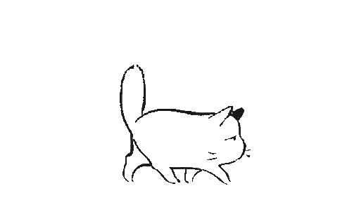
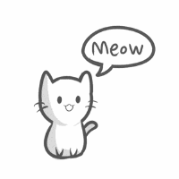

Recomendaciones para el cuidado de los gatos |
 |
| Medidas de precaución Los gatos son animales inquietos y ya verás que se meten en todos los rincones. Ante este carácter aventurero, tendremos que tomar ciertas medidas de precaución cerrando los balcones, puertas y ventanas o buscar alternativas de productos antiescapes para gatos, como las mallas o algún tipo de barrera para evitar saltos y caídas. Sobre todo si vives en una planta alta. |
Alejar posibles objetos peligros de su alcance Otro peligro que puede encontrar el gato al merodear por la casa son los productos tóxicos con los que puedan estar a su alcance por algún descuido (ojo con las plantas tóxicas como el laurel, filodrendos, amarilis o insecticidas y medicamentos) obviamente hay que evitar a toda costa la ingesta de estos productos o de cualquier otro objeto con el que pueda atragantarse. |
|
 |
| Educa a los niños a respetarlos Si hay niños en la casa hay que enseñarles a que lo respeten. Aunque tienen mucha paciencia, no soportan tirones de rabo, sustos o sujeciones inadecuadas. |
| Protege a tus otras mascotas Y, por último, si ya tenías otras mascotas en el hogar, hay que prestar especial atención a todas aquellas que puedan ser presa de tu gato: pájaros, peces o pequeños roedores. No olvides que son depredadores natos por lo que tendrás que salvaguardar el hábitat de los pequeños animales y mantenerlos separados siempre de los felinos. |
| Cómo se relaciona y socializa mi gato Para que nuestro gato esté sano y sea feliz debe realizar actividades físicas y mentales diariamente. Será muy importante que interactuemos con él y que le proporcionemos juguetes específicos para gatos ya que no se divierte igual si juega solo. Nos conviene ayudarle a relacionarse con nuestros invitados y con los elementos del entorno. Si utilizamos golosinas o comida específica para gatos, para que nuestros invitados se las ofrezcan, conseguiremos una actitud muy sociable en nuestra mascota. |
| Cómo debo alimentar a mi gato La alimentación debe ser la adecuada a su edad y a su estado fisiológico (gestación, lactancia, castrado, …) . Para asegurar un equilibrio nutricional será recomendable dejarle comida todo el día a base de pienso, combinando alimentos secos con húmedos, y poner a su alcance agua fresca y limpia en un recipiente separado podemos utilizar una fuente porque beber de corrientes de agua les encanta. |